Hydraulic soft sensor - container mass report (full400)
On the time (same machines, later months) split the selected soft sensor estimates the mass in the hour before emptying with a mean error of 3.7 % (median 3.0 %, 73 % of lifts within 5 %, n = 4876), against 28.3 % for the naive fill × nominal density estimate; 4 of 4 materials meet the < 5 % target. The calibrated p10–p90 interval covers 78 % of lift masses (target 80 %). On the bins (unseen machines) split the selected soft sensor estimates the mass in the hour before emptying with a mean error of 5.3 % (median 4.3 %, 55 % of lifts within 5 %, n = 1221), against 32.1 % for the naive fill × nominal density estimate; 1 of 4 materials meet the < 5 % target (missing: cardboard, paper, mixed_waste). The calibrated p10–p90 interval covers 77 % of lift masses (target 80 %).
All data is synthetic (simulator output for the Europress hackathon). The numbers demonstrate the method, not field performance.
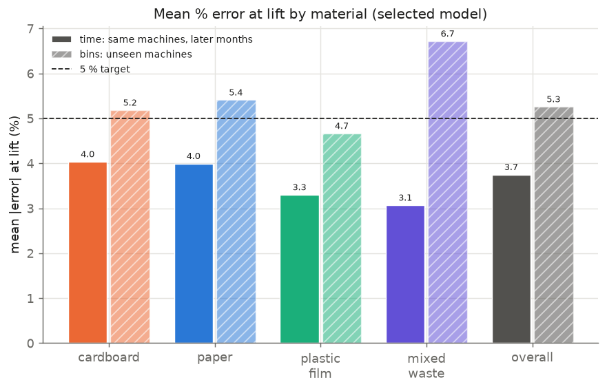
Compute
| item | value |
|---|---|
| training wall time (all splits) | 798 s |
| feature build | 37.7 s |
| peak memory (RSS) | 4.12 GB |
| hourly rows / machines | 3,504,000 / 400 |
split time wall time | 469 s |
split bins wall time | 290 s |
| prediction run | 3,504,000 rows in 72.3 s (features + predict 70.9 s) |
| prediction cost | 20.2 µs per machine-hour |
| prediction peak memory | 4.00 GB |
Split time (same machines, later months)
Same machines, trained on the first 75 % of time and tested on the last 25 %. Training machines: 400, test machines: 400, test from 2026-07-01 17:15:00+03:00. Rows: train 2,070,084, val 262,800, cal 262,800, test 876,000.
Selected setup: cardboard → per_material, paper → per_material, plastic_film → per_material, mixed_waste → per_material.
At lift (hour before emptying vs weighbridge):
| material | n | MAE kg | mean % | median % | within 5 % | within 10 % | bias kg | coverage | width kg |
|---|---|---|---|---|---|---|---|---|---|
| cardboard | 2479 | 121 | 4.0 | 3.2 | 69 % | 95 % | -35 | 78 % | 455 |
| paper | 702 | 134 | 4.0 | 3.1 | 69 % | 94 % | -16 | 78 % | 502 |
| plastic_film | 1168 | 58 | 3.3 | 2.6 | 78 % | 97 % | -6 | 80 % | 226 |
| mixed_waste | 527 | 144 | 3.1 | 2.4 | 83 % | 98 % | -22 | 77 % | 529 |
| overall | 4876 | 110 | 3.7 | 3.0 | 73 % | 96 % | -24 | 78 % | 415 |
Hourly (every test hour):
| material | MAE kg | mean % | coverage |
|---|---|---|---|
| cardboard | 74 | 5.6 | 79 % |
| paper | 80 | 5.7 | 77 % |
| plastic_film | 36 | 4.4 | 79 % |
| mixed_waste | 83 | 4.2 | 80 % |
| overall | 66 | 5.2 | 79 % |
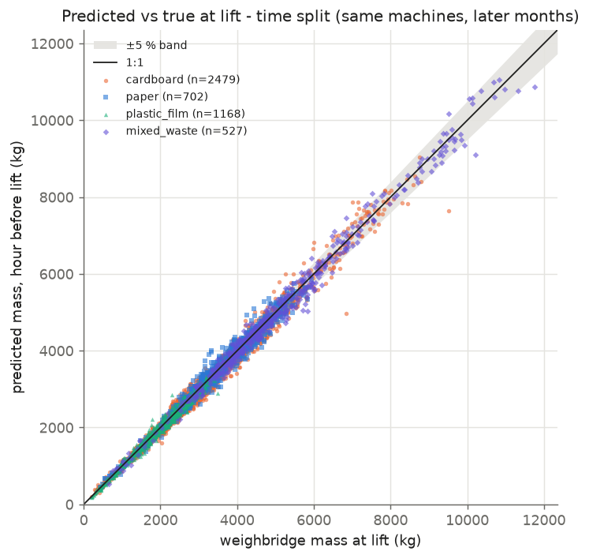
Split bins (unseen machines)
Unseen machines (25 % held out, stratified by material), tested on the last 25 % of the period. Training machines: 240, test machines: 100, test from 2026-07-01 17:15:00+03:00. Rows: train 1,556,196, val 201,569, cal 188,497, test 219,000.
Selected setup: cardboard → per_material, paper → shared, plastic_film → per_material, mixed_waste → per_material.
At lift (hour before emptying vs weighbridge):
| material | n | MAE kg | mean % | median % | within 5 % | within 10 % | bias kg | coverage | width kg |
|---|---|---|---|---|---|---|---|---|---|
| cardboard | 610 | 147 | 5.2 | 4.4 | 55 % | 89 % | -59 | 82 % | 548 |
| paper | 184 | 192 | 5.4 | 4.1 | 58 % | 84 % | -48 | 86 % | 734 |
| plastic_film | 294 | 79 | 4.7 | 3.5 | 64 % | 87 % | -2 | 82 % | 275 |
| mixed_waste | 133 | 407 | 6.7 | 6.7 | 35 % | 86 % | -156 | 31 % | 547 |
| overall | 1221 | 166 | 5.3 | 4.3 | 55 % | 88 % | -54 | 77 % | 510 |
Hourly (every test hour):
| material | MAE kg | mean % | coverage |
|---|---|---|---|
| cardboard | 88 | 6.6 | 81 % |
| paper | 106 | 6.7 | 83 % |
| plastic_film | 50 | 6.1 | 76 % |
| mixed_waste | 172 | 6.5 | 56 % |
| overall | 90 | 6.5 | 77 % |
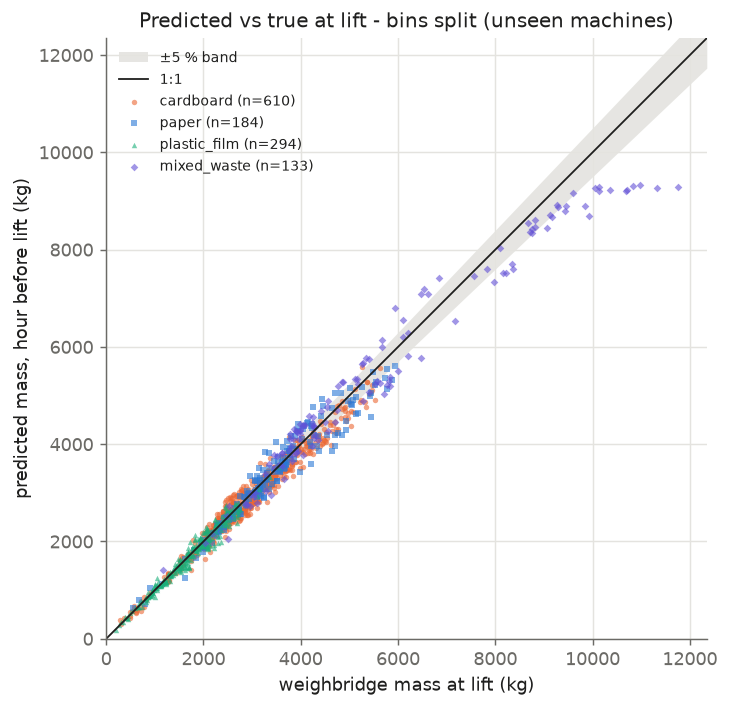
Comparison ladder (mean % error at lift)
Each step adds signals: naive fill × nominal density → fill + press counts (LightGBM) → + peak hydraulic pressure → + pressure graph (pressure along the ram stroke: contact point, rise slope, mean pressure, completion) → + weather (full model, shared across materials); then the full per-material models and the setup selected per material on validation. The reported fill level itself is the machine's approximate, pressure-derived estimate.
time (same machines, later months)
| step | cardboard | paper | plastic_film | mixed_waste | overall |
|---|---|---|---|---|---|
| naive fill x density | 26.4 | 25.4 | 33.0 | 30.8 | 28.3 |
| fill + presses | 5.9 | 5.9 | 5.9 | 5.3 | 5.8 |
| + pressure (peak) | 4.6 | 4.7 | 3.6 | 3.5 | 4.3 |
| + pressure graph | 4.3 | 4.4 | 3.6 | 3.3 | 4.0 |
| + weather (full, shared) | 4.2 | 4.2 | 3.6 | 3.4 | 4.0 |
| full, per material | 4.0 | 4.0 | 3.3 | 3.1 | 3.7 |
| selected | 4.0 | 4.0 | 3.3 | 3.1 | 3.7 |
bins (unseen machines)
| step | cardboard | paper | plastic_film | mixed_waste | overall |
|---|---|---|---|---|---|
| naive fill x density | 31.0 | 28.3 | 41.9 | 20.3 | 32.1 |
| fill + presses | 6.3 | 6.6 | 7.2 | 10.0 | 7.0 |
| + pressure (peak) | 5.6 | 5.7 | 5.3 | 8.7 | 5.9 |
| + pressure graph | 5.5 | 5.6 | 5.3 | 7.6 | 5.7 |
| + weather (full, shared) | 5.3 | 5.4 | 5.2 | 7.6 | 5.5 |
| full, per material | 5.2 | 5.8 | 4.7 | 6.7 | 5.3 |
| selected | 5.2 | 5.4 | 4.7 | 6.7 | 5.3 |
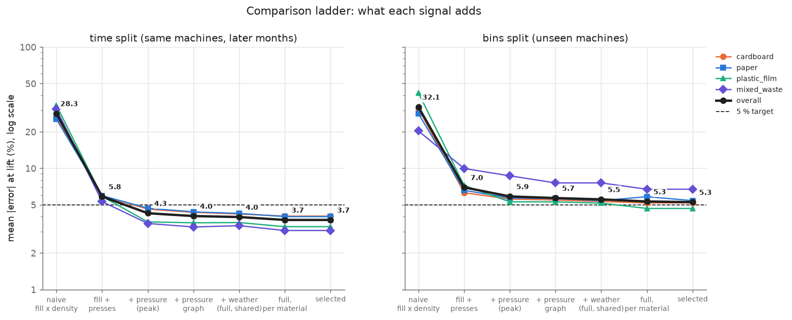
Per-material vs shared model
Setup is chosen per material on the validation lifts (mean % error); – means no validation lifts of that material, in which case the shared model is kept.
| material | split | val shared | val per-material | test shared | test per-material | selected | better on test |
|---|---|---|---|---|---|---|---|
| cardboard | time | 3.9 | 3.8 | 4.2 | 4.0 | per_material | per_material |
| paper | time | 4.2 | 4.0 | 4.2 | 4.0 | per_material | per_material |
| plastic_film | time | 3.6 | 3.4 | 3.6 | 3.3 | per_material | per_material |
| mixed_waste | time | 3.6 | 3.1 | 3.4 | 3.1 | per_material | per_material |
| cardboard | bins | 4.7 | 4.5 | 5.3 | 5.2 | per_material | per_material |
| paper | bins | 5.1 | 5.6 | 5.4 | 5.8 | shared | shared |
| plastic_film | bins | 4.9 | 4.7 | 5.2 | 4.7 | per_material | per_material |
| mixed_waste | bins | 6.8 | 6.0 | 7.6 | 6.7 | per_material | per_material |
Interval coverage (target 80 %)
Intervals come from LightGBM quantile models (p10/p90) calibrated by normalised conformalised quantile regression (CQR): on a separate calibration slice (machines/hours used neither for training nor for validation) the score max(q_lo − y, y − q_hi) / width is computed and the interval is widened by its finite-sample 80 % quantile. Calibration is Mondrian by material × fill bucket (fill edges 50.0, 80.0 %); strata with fewer than 30 calibration points fall back to the material, then to the pool.
| material | split | lift coverage | lift width kg | hourly coverage | hourly width kg |
|---|---|---|---|---|---|
| cardboard | time | 78 % | 455 | 79 % | 267 |
| paper | time | 78 % | 502 | 77 % | 278 |
| plastic_film | time | 80 % | 226 | 79 % | 134 |
| mixed_waste | time | 77 % | 529 | 80 % | 331 |
| overall | time | 78 % | 415 | 79 % | 242 |
| cardboard | bins | 82 % | 548 | 81 % | 303 |
| paper | bins | 86 % | 734 | 83 % | 395 |
| plastic_film | bins | 82 % | 275 | 76 % | 148 |
| mixed_waste | bins | 31 % | 547 | 56 % | 351 |
| overall | bins | 77 % | 510 | 77 % | 283 |
Lift coverage more than 5 pp below target: mixed_waste/bins (31 %). Calibration pools all hours of a stratum, while the lift hour is the fullest, hardest hour of a cycle; on unseen machines the calibration machines are also few, so their error scale need not transfer.
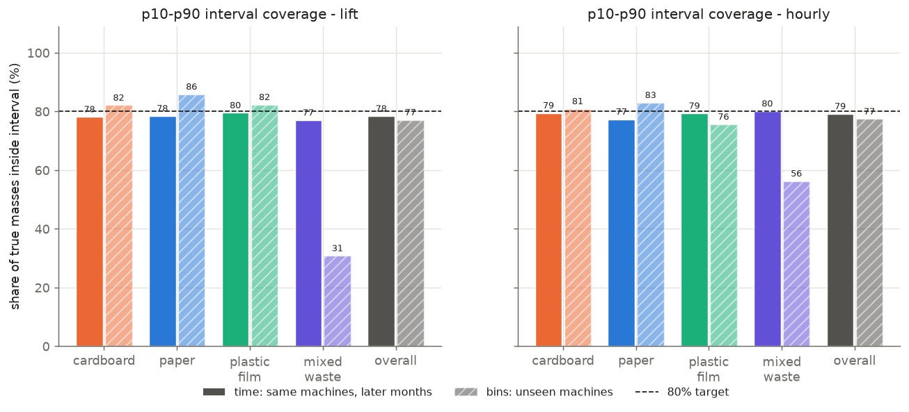
Hourly mass curves
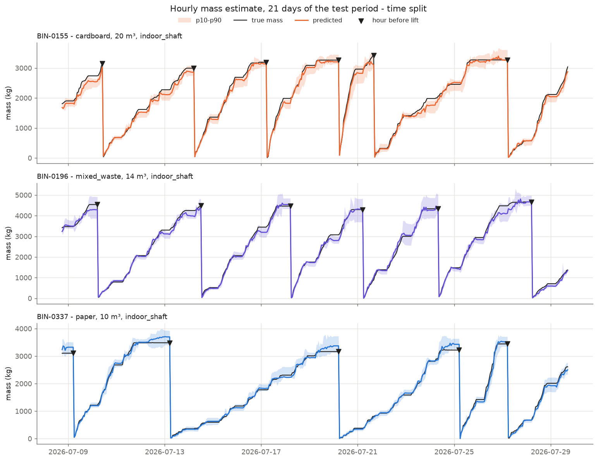
Error breakdowns (lift, selected model)
Infeed type
| infeed | time mean % | time n | bins mean % | bins n |
|---|---|---|---|---|
| indoor_shaft | 3.7 | 1611 | 4.9 | 286 |
| lidded_hopper | 3.7 | 1167 | 5.2 | 426 |
| open_hopper | 3.8 | 2098 | 5.5 | 509 |
Drainage (0 = no, 1 = yes)
| drainage | time mean % | time n | bins mean % | bins n |
|---|---|---|---|---|
| 0.0 | 3.8 | 3499 | 5.4 | 834 |
| 1.0 | 3.5 | 1377 | 4.9 | 387 |
Equipment class
| equipment_class | time mean % | time n | bins mean % | bins n |
|---|---|---|---|---|
| COMBI | 3.8 | 3827 | 5.1 | 986 |
| DUO | 3.6 | 1049 | 5.8 | 235 |
Container size
| container_size | time mean % | time n | bins mean % | bins n |
|---|---|---|---|---|
| <=14 m3 | 3.8 | 2623 | 5.1 | 619 |
| 15-20 m3 | 3.6 | 1809 | 5.4 | 539 |
| >20 m3 | 3.8 | 444 | 5.4 | 63 |
False-full episode in the cycle
| false_full_in_cycle | time mean % | time n | bins mean % | bins n |
|---|---|---|---|---|
| no | 3.5 | 4294 | 5.0 | 1073 |
| yes | 5.5 | 582 | 7.2 | 148 |
Weather in the week before lift
| week | time mean % | time n | bins mean % | bins n |
|---|---|---|---|---|
| dry (bottom 25 %) | 3.7 | 1247 | 5.4 | 309 |
| middle | 3.7 | 2409 | 5.0 | 604 |
| wet (top 25 % rain7) | 3.9 | 1220 | 5.6 | 308 |
Learning curve (unseen machines, shared model)
| training machines | overall | cardboard | paper | plastic_film | mixed_waste |
|---|---|---|---|---|---|
| 10 | 9.7 | 8.7 | 10.3 | 8.0 | 17.7 |
| 25 | 7.8 | 6.8 | 9.7 | 6.8 | 12.1 |
| 50 | 6.7 | 6.5 | 7.3 | 6.5 | 7.6 |
| 100 | 6.1 | 5.8 | 6.4 | 5.5 | 8.0 |
| 240 | 5.6 | 5.3 | 5.6 | 5.3 | 7.7 |
A pilot needs about 100 machines: the smallest size whose error on unseen machines is within 0.5 pp of the all-machines value (5.6 %). The largest gain is from 10 to 25 machines (9.7 → 7.8 %).
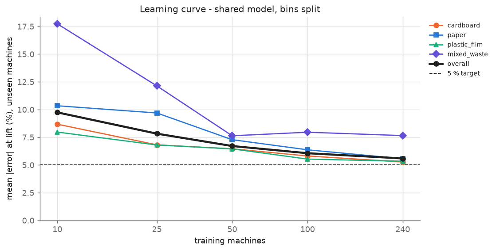
Feature importance (top 5 by gain share)
Materials served by the shared model show the same ranking (one model).
| material | split | model | top features |
|---|---|---|---|
| cardboard | time | per_material | p_ewm (45 %), curve_rise_slope_ewm (42 %), pressure_kg_m3 (8 %), presses_cycle (2 %), container_volume_m3 (1 %) |
| mixed_waste | time | per_material | p_ewm (45 %), curve_rise_slope_ewm (42 %), pressure_kg_m3 (9 %), presses_cycle (2 %), fill_ffill (0 %) |
| paper | time | per_material | p_ewm (53 %), curve_rise_slope_ewm (27 %), pressure_kg_m3 (14 %), presses_cycle (3 %), fill_ffill (1 %) |
| plastic_film | time | per_material | p_ewm (51 %), curve_rise_slope_ewm (35 %), pressure_kg_m3 (11 %), presses_cycle (2 %), fill_ffill (0 %) |
| cardboard | bins | per_material | p_ewm (46 %), curve_rise_slope_ewm (39 %), pressure_kg_m3 (9 %), presses_cycle (1 %), container_volume_m3 (1 %) |
| mixed_waste | bins | per_material | curve_rise_slope_ewm (53 %), p_ewm (33 %), pressure_kg_m3 (11 %), presses_cycle (2 %), fill_ffill (1 %) |
| paper | bins | shared | pressure_kg_m3 (59 %), naive_kg_m3 (24 %), curve_rise_slope_ewm (8 %), graph_kg_m3 (3 %), p_ewm (2 %) |
| plastic_film | bins | per_material | p_ewm (42 %), curve_rise_slope_ewm (40 %), pressure_kg_m3 (15 %), presses_cycle (2 %), fill_ffill (1 %) |
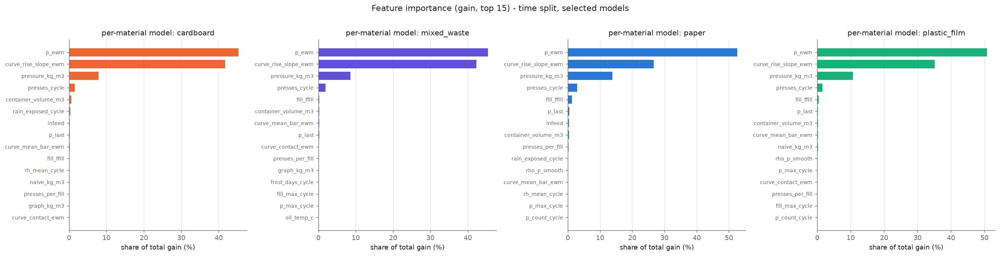
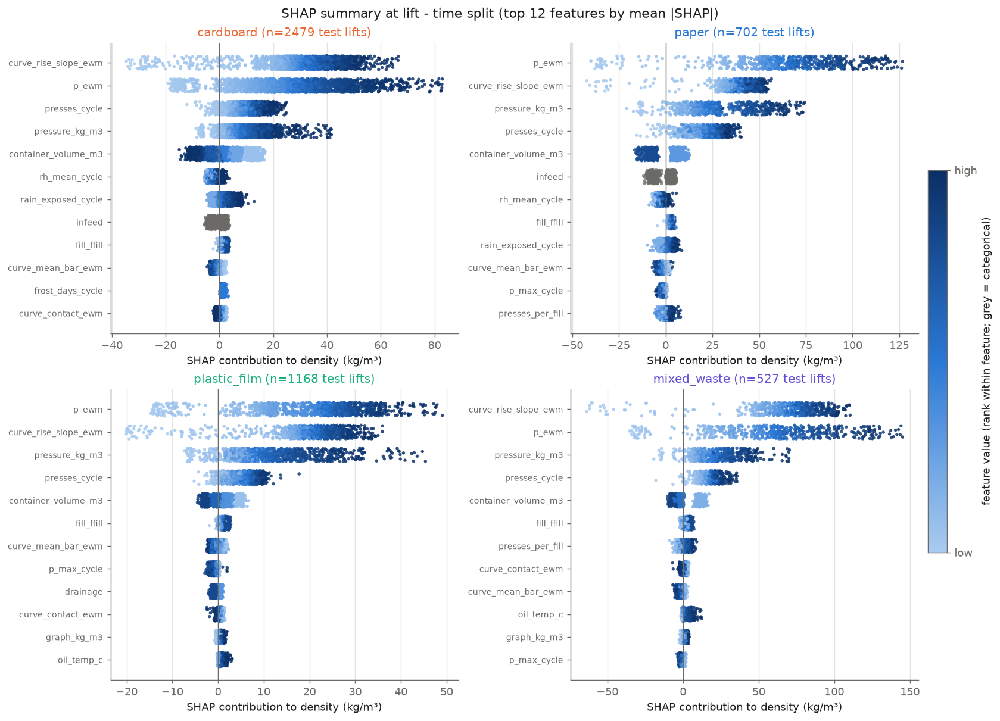
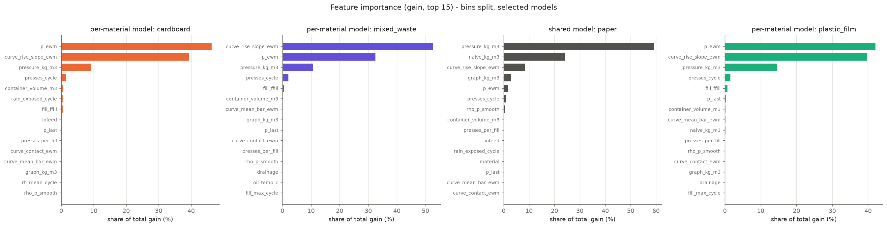
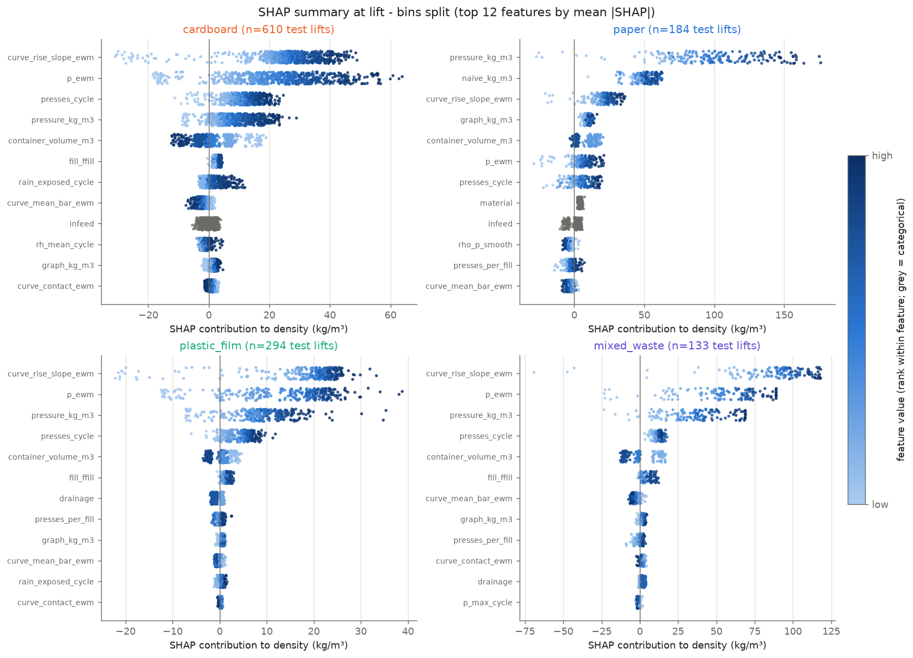
Target check (mean % error at lift < 5 %)
| material | split | mean % at lift | n lifts | < 5 % |
|---|---|---|---|---|
| cardboard | time | 4.0 | 2479 | yes |
| paper | time | 4.0 | 702 | yes |
| plastic_film | time | 3.3 | 1168 | yes |
| mixed_waste | time | 3.1 | 527 | yes |
| cardboard | bins | 5.2 | 610 | no |
| paper | bins | 5.4 | 184 | no |
| plastic_film | bins | 4.7 | 294 | yes |
| mixed_waste | bins | 6.7 | 133 | no |
Not met, and the likely reasons from the data:
- cardboard,
binssplit (5.2 %): the error is broad-based (median 4.4 %), not driven by a few outliers; 69 of 610 lifts had a false-full episode in the cycle (7.1 % vs 4.9 % without); the fleet has 200 cardboard machine(s) of 400, at most 150 of them in training. - paper,
binssplit (5.4 %): the error is broad-based (median 4.1 %), not driven by a few outliers; 19 of 184 lifts had a false-full episode in the cycle (8.4 % vs 5.1 % without); the fleet has 60 paper machine(s) of 400, at most 45 of them in training. - mixed_waste,
binssplit (6.7 %): the error is broad-based (median 6.7 %), not driven by a few outliers; 18 of 133 lifts had a false-full episode in the cycle (8.1 % vs 6.5 % without); the fleet has 40 mixed_waste machine(s) of 400, at most 30 of them in training.